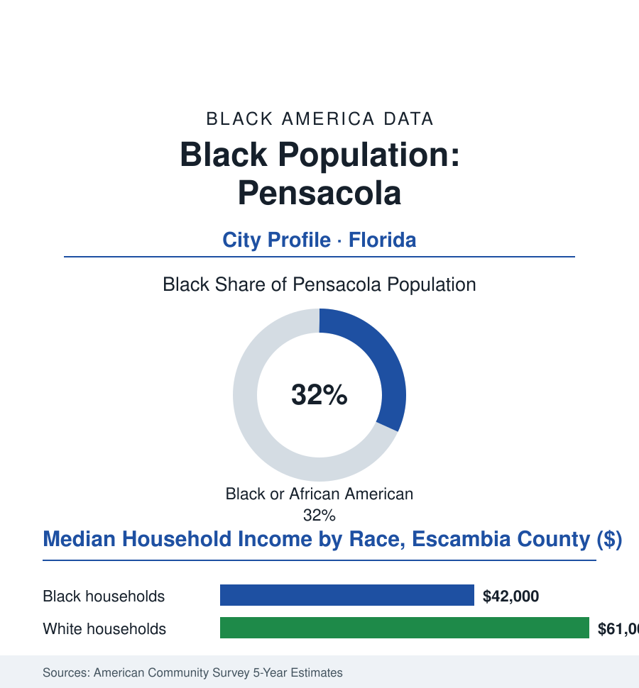

Black Cities
Black Pensacola: 17,000 People in America's First Settlement
Pensacola predates Plymouth — and its Black community, Creole-rooted and Navy-built, is as old as the city itself, through Spanish flags, the lumber boom, and the beach's long exclusion.

Pensacola's Black community numbers roughly 17,000 people — about 32% of the city's 54,000 residents — in the oldest European settlement in the continental United States, where Black life, free and enslaved, Creole and American, is documented from the sixteenth century's landings forward. It is a Navy town and a lumber town layered over a colonial port. This article reads Pensacola's numbers.
Creoles, Lumber, and the Navy Yard
The colonial layers give this community a genealogy few in the atlas can match: under the Spanish and French flags the Gulf port's free people of color formed a Creole stratum — property-holding, Catholic and Masonic, its surnames still on the city's streets — beside the enslaved labor that built the forts and worked the harbor, the whole arrangement re-sorted when the American flag and its racial code arrived with the territory. The nineteenth century's engine was the pine forest: Pensacola's lumber and naval-stores boom made it the yellow-pine port of the Gulf, and the turpentine camps and sawmills of the panhandle drew Black labor on the farm file's harshest terms (the camps' isolation and the debt system in the state investigations' plain language) while the city's neighborhoods — the Belmont-DeVilliers district above all — built the Black commercial and cultural quarter whose music venues carried the chitlin' circuit's Gulf route (the district's restored markers now making the claim the buildings always did). The twentieth century's employer was the flag itself: the Naval Air Station, from 1914 the cradle of naval aviation, its civilian workforce a Black ladder of the public file's classic pattern — and the civil-rights era's Pensacola chapters (the school's and the lunch counters' fights, the beach's contested shore, the Escambia boycotts of the record) proceeded through the courts into the modern city's charter. The community's churches — some congregations older than the state — and its fraternal halls carried the institutional line unbroken from the Creole lodges forward.
One living tradition ties the layers together in the calendar's data: Mardi Gras. Pensacola's carnival — among the Gulf's oldest celebrations — runs on parallel krewe systems whose Black organizations date their balls and parades across the whole twentieth century in the society pages of the Black press, the season's economics and pageantry shared and separated in the pattern of everything else in this file. The modern carnival markets both systems to the visitor economy; the community's elders can still tell you which ball their grandparents attended, and why there were two.
The Working Port's Present
The modern data draw a small port city's profile with the military's hand heavy on the scale: the air station and its contractor cloud (the region's largest employment gravity, its Black civilian and veteran households a demographic constant across the metro's west side), the port's modest revival, the hospital row and the university on the hill, the tourism of the sugar beaches — whose history carries this file's specific irony, the shore that the segregation era fenced now marketed by the county whose Black taxpayers' descendants staff its resorts — and the household rows in the Escambia survey cuts (a Black median in the low forty-thousands, the poverty tracts in the city's historic northern and western neighborhoods, the homeownership file's older stock). The storms write their recurring column (Ivan's 2004 landfall in the damage data among the coast's worst, the recovery's distribution audited in the familiar pattern), and the civic shelf answers in kind: the Belmont-DeVilliers restoration as heritage economy, the school district's long unitary-status file closed in the present era, the community's cultural institutions — the museum and history projects of the African-American heritage society — curating the deepest archive on the Gulf: four and a half centuries, in one small city's ground, of Black presence under five flags.
Reading Pensacola's Numbers
Seventeen thousand people in the first settlement: Pensacola's file is the cities section's deepest time — Creole surnames, turpentine scars, Navy paychecks, one community. The census counts the residents. The flags changed five times over this ground; the community, the record shows, was the continuity every one of them inherited. Four flags' paperwork survives in the archives; the fifth flies over a community that was never paperwork to itself.
More in Black Cities
Black Atlanta: Population, Distribution, and Growth of a Black Metropolis
Metro Atlanta holds more than two million Black residents — roughly one in three, second only to New York. The suburban distribution, migration history, and composition of Black Atlanta in the census data.
Black New York: The Largest Black Population in America
The New York metropolitan area holds about 3.4 million Black residents — more than any metro in the nation — and the city itself about two million. The census profile.
Black Washington: The District and the Metro
The Washington metro holds about 1.6 million Black residents, and the District itself — long a majority-Black city — now records a Black share near 41 percent. The census profile.
Source: U.S. Census Bureau, 2020 Census and American Community Survey 5-year estimates; City of Pensacola and Escambia County; University of West Florida and Pensacola historical records.